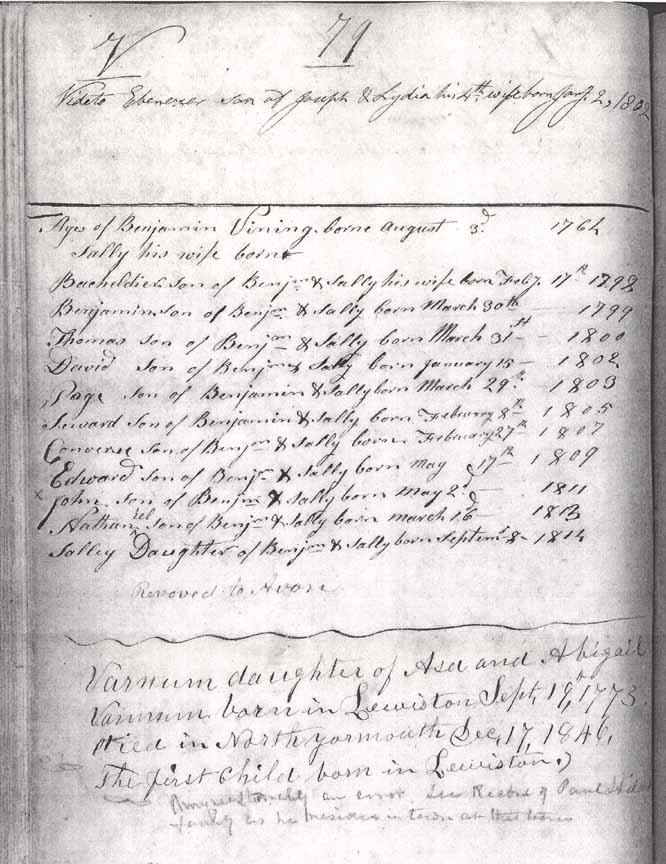

Family Data
Below are images of the spine of a record book for the city of Lewiston (Androscoggin County), Maine, and the top of page 79 from that book. These images were produced on 22 September 2004 by the Lewiston city clerk's office.
Census Data
| 1800 | 1810 | 1820 | 1830 | 1840 | 1850 | 1860 | 1870 | |
| Benjamin Vining Jr. | M 26–44 | M 45 and over | M 45 and over | ? | dead | |||
| Sarah "Sally" (Ring) Vining | F 16–25 | F 26–45 | F 26–45 | ? | ? | ? | 83 [see note below] |
dead |
| Batchelder Ring Vining | M under 10 | M 10–16 | M 16–26 | ? | ? | ? | ? | ? |
| Benjamin Brooks Vining | M under 10 | M 10–16 | M 16–26 | married and living in separate household | ||||
| Thomas Vining | M under 10 | M 10–16 | M 16–26 | married and living in separate household | ||||
| David Vining | M under 10 | M 16–26 | married and living in separate household | |||||
| Page Vining | M under 10 | M 16–26 | married and living in separate household | |||||
| Seward P. Vining | M under 10 | M 10–16 | ? | married [and living in separate household?] | ||||
| Converse Wing Vining | M under 10 | M 10–16 | ? | married and living in separate household | ||||
| Edward Vining | M under 10 | M 10–16 | ? | married and living in separate household | ||||
| John Vining | M under 10 | ? | married and living in separate household | |||||
| Nathaniel R. Vining | M under 10 | ? | married [and living in separate household?] | |||||
| Sarah "Sally" Vining | F under 10 | ? | ? | married and living in separate household | ||||
| Keziah M. Vining | F under 10 | ? | ? | married and living in separate household | ||||
| O. Israel Fifield Vining | M under 10 | ? | ? | married and living in separate household | ||||
| Hiram Vining | ? | ? | married and living in separate household |


Death Data
Gravestone for Sarah (Ring) Vining, in Pease Cemetery, Avon, Franklin County, Maine (from Find A Grave):